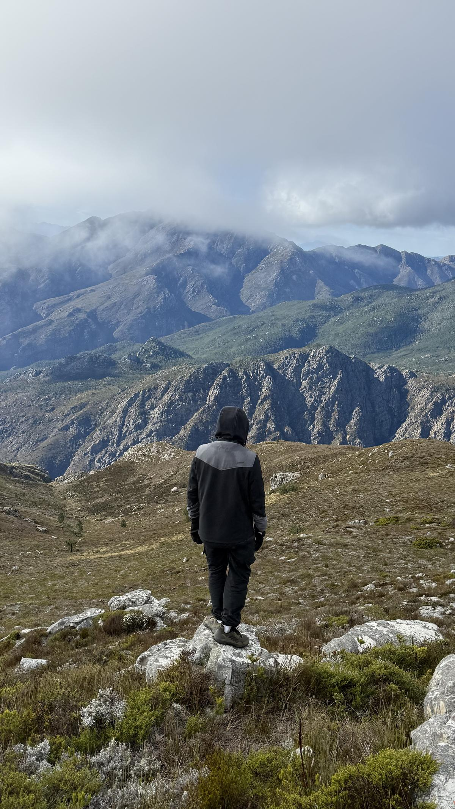
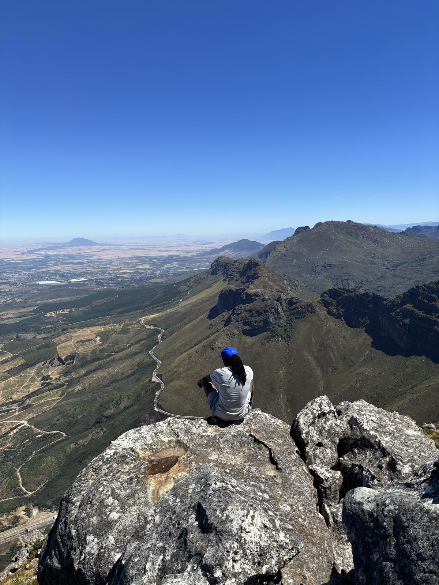
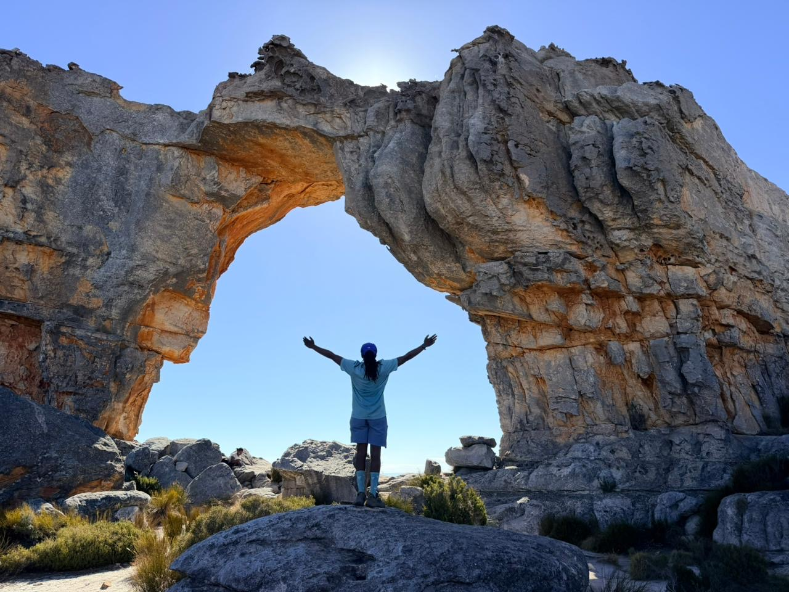
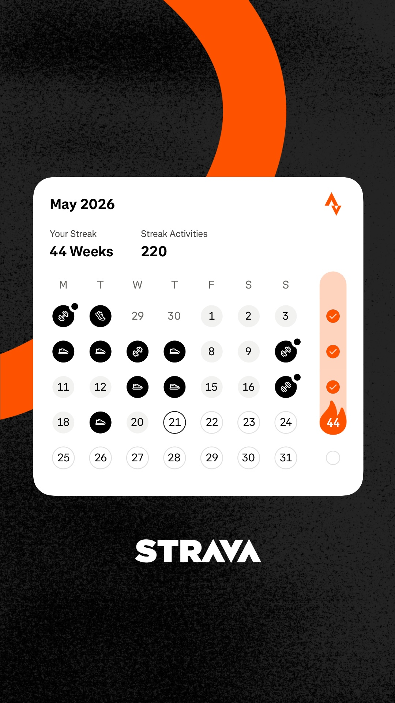

Something to Hold On To
We have all experienced the feeling of falling, after tripping our feet on an object and losing our balance. Feeling that we are getting closer to the ground, and in that moment the natural thing is to grab whatever is next to you, whomever. And when we grab something to help us balance and avoid the fall we take little consideration about the structural integrity of what we are holding on to. It could be a chair, a plant or a person. And when it is a person we do not care if Bob has back problems. I am falling and Bob is close by, and so I reach for Bob. Moments later we offer Bob an apology and hope that he extends grace. But Bob doesn't hold grudges, he understands that we are falling and worst case, he gets to skip his physio session because "it hurts too much". But this is not about Bob. It's about that feeling of needing support and realising that you do not have the necessary structures and systems around you to provide it.
Burnout. At face level it sounds like the name of a really lovely rock song, but I would not know because I don't listen to rock. More of a hip-hop guy. I first experienced burnout whilst working for a startup as a junior software engineer. I had made the transition from mechatronics engineering to the land of software, working with three talented engineers who not only had experience but had a previous working relationship through side projects they had dabbled with. I felt like an imposter. These were real software engineers who had sat through lectures on data structures and algorithms, and I did not want to let them down. So as tasks piled up I started sacrificing my Sundays to keep up so that I would have an update come Monday morning. This meant that I would start off my week exhausted, having gotten very little rest. This pattern resulted in me not taking care of myself, making poor eating decisions and not exercising because I had no energy. Then one day during a meeting, I was asked to provide an update and I did something that I took great shame in. I admitted that not only had I not completed my task, but that I was too tired to think. Many thoughts raced through my mind as I said this out loud. Would they regret hiring me? Would they lose trust in me going forward? I should have worked harder, longer. Sacrificed more time. To my surprise, the only person disappointed in me was myself. I was shown a kindness that I wasn't familiar with, because I am quite harsh on myself.
Logic would dictate that I would learn from that experience, but that was the first of many burnouts. I remember being on production support and everything was falling apart. My phone kept ringing with alerts and my only solution was more. Dedicate more of myself to the issues. Look at more logs. Open a new tab. But I never stopped to ask whether I was doing too much, whether I could handle it all. I just committed more of myself. Energy drink after energy drink, more takeouts, less sleep. I started to fall and I did not have a routine around me that I could fall back on. And the pattern just before I would crash out was always the same. Pressure is rising from work, I feel overwhelmed and I commit to more hours, eating poorly and not exercising. Because I did not have a routine or any tactics that I could rely on when things got challenging. Some time has passed and I have not had a burnout as serious as the first few, but I have been close. And I attribute this to the systems that I have formed around me to make it easier to stay afloat when the tide rises.
The mountains. I joined a hiking group and I occasionally go on multi-day hikes with them, and it is the best thing I could have ever done for myself. There is a sense of freedom that I feel as we drive away from the city and into the hinterland. The roads are less busy, the air is cleaner. Everything begins to feel okay. No demands, just the road. Once the hike starts, I quite enjoy looking back and seeing the landscape. It changes with each step that I take. I begin to see more, farther, and I believe that translates to all other situations in life. It reminds me that sometimes I am limited by what I know and just how far I can see, and that there is always more I can learn if I shift. I try to do this at least once a month and it has been a great help.



General exercise. I have a 44 week streak on Strava, with my activities ranging from weight lifting to running to unnecessarily long walks. Forcing myself to maintain that streak has benefited me immensely. The research on exercise and endorphins is well documented, but for me it is less about the science and more about the routine. It is another system, another structure that I can fall back on when everything else feels unsteady. The streak itself becomes its own motivation. Breaking it would feel like losing a crutch I have come to depend on, so I keep going.

Journaling. This one is tricky, not only for me but I think humans in general are bad at self reflection. My capacity for honest feedback, even from myself, has gotten better over the years, but I still struggle with it. The mental headspace needed for me to be honest with myself is not always available, and that is something I am still working on. But my journaling sessions are a way for me to fully process my thoughts. Every idea, every frustration that gets interrupted by a text message, a Teams notification or traffic now needs to be fleshed out because I have to write it down in a coherent sentence. Sometimes it is not coherent, but the point stands. And it is through these sessions that I am able to cut through my ego and my emotions and identify that it is getting too much. That I need to send a hike.
These three things, having a routine around them, have helped immensely. They become the crutch that I fall back on when I stumble. They become the comfort I turn to when I feel overwhelmed. Because sometimes, when we are falling, we need something to hold on to.
← Back to Blog